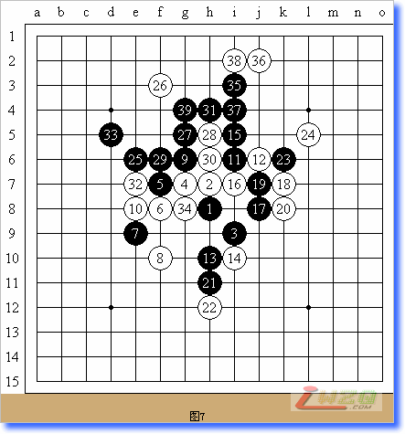

世锦赛第11轮山口釉水对秦晋
#1 世锦赛第11轮山口釉水对秦晋 作者：有志青年 发表时间：2007-8-16 7:48:51
第十届世界连珠个人锦标赛A组最后一轮的比赛中，牵动人心的还有日本山口釉水九段和俄罗斯骁将秦晋七段的对局。两个人在理论和实际上都还存在夺冠希望。尽管他们需要看吴镝和索斯科夫的结果，但是更关键的还是需要凭自己的实力拿下这局再说。何况，即便拿不到冠军，任何人胜了本局也应该可以获得亚军的。
实战，山口布局。看来为了最后一战，山口拿出最熟悉的布局“丘月”了。这个应该也是日本棋手研究相对时间比较长，有较多心得的布局了。秦晋提出交换，也是很正常的。毕竟大家觉得在这个布局中执黑还是主动些。山口留下了实战的打点。这个黑5被公认为一打，曾经国内有过必胜的论调，但是现在看来可能还有一些强防没有在理论上得到解决。白6最强防御，山口是认真的了，没有再采用什么弱防了。黑7也是最强。白8有趣的一手。也是山口擅长的后手策略的体现。似乎日本不少大师级棋手都喜欢这样的战术。
有棋手提出参考图中的黑9是最强的应招，不知道秦晋是否会这么下。
秦晋实战的黑9可能是从稳固的角度考虑的。既消除白棋可能对自己造成的威胁，又转身开拓上方新的战场。白10是比较坚实的防御。黑11成功转身同右边的黑棋呼应了。白12强防。黑13是一招好棋，贯彻了“敌之要点，我之要点”的棋理，既是攻击的一手也是防御的手段。攻中带防，防中含攻。山口的白14是无奈的防御。不过采用后手策略的他，肯定是要先经历黑棋一顿猛烈的进攻，只有防住才有可能迈向胜利。因此棋局在某种程度上说也是赌局。黑15 转身再上去，这就是高水平棋手对棋局进程处理和时机把握的一种手段了，既要达到步步占先的目的，又要做好稳固后方，两者只有相得益彰，才能取得成功。
白16是强防，意图切断黑棋的上下联系。黑17活三，白18唯一，黑19后，山口在考虑白20的防点。总体感觉，现在黑棋的形势还不错的。

白20最强的防御，同时适时为今后的反攻做好了铺垫。 黑21先手安顿下方，白22必须的一手。因为现在白棋不可能脱先抢攻。
秦晋和山口两个人在比赛捭腕子。重点内容是中盘力量和组型的较量。黑23、25、27都是非常有力量和根基的着法。秦晋攻击的非常有章法，而且很稳固，基本没有给白棋任何乘机的地方。白26属于山口惯用的防御手段。不过现在看来没有给黑棋造成任何麻烦。这局棋看来山口是危险了。
山口的白28还是采取了敦实的防御。秦晋自黑29开始发动新一轮的攻击。到白34，山口的防御尽管是很强硬的，但是似乎没有什么效果了吧，黑35如果下在C5不知道白是否还有好的防御？

秦晋采取了最直接的攻击。山口没有防了。秦晋取胜，这样他也为俄罗斯捧得了亚军的奖杯。